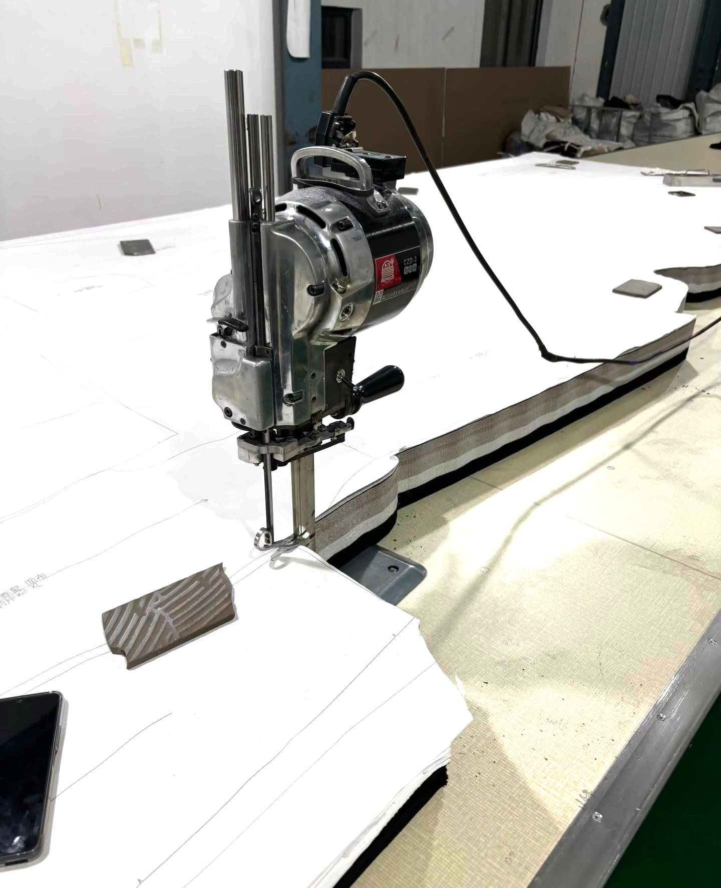

Custom Apparel for Your Brand
Private Label Clothing Manufacturer
Cyncho helps brands create private label apparel collections from product idea to finished production, including development, fabric sourcing, trims, labels and packaging support.
Request Factory Quote
Private Label Development
Start with a tech pack, sketch or reference sample and our team will help you move toward a production-ready garment.
Branding, Labels and Trims
We can support label placement, trims, packaging details and material sourcing so the collection feels consistent with your brand.
Production Support
After sample approval, we help manage bulk production details, quality checks and export communication.
Frequently Asked Questions
Do you make clothing with my brand label?
Yes. We can support private label apparel production with your brand labels and packaging requirements.
Can you help source fabrics and trims?
Yes. Fabric and trim sourcing can be included during development and production planning.
What should I prepare before contacting you?
Prepare your style references, quantity, size range, target fabric and any brand label or packaging needs.
Explore Related Manufacturing Services
Compare Cyncho service pages to choose the best production path for your brand: women clothing manufacturer, OEM apparel manufacturer, private label clothing manufacturer, custom garment manufacturer and sustainable clothing manufacturer.
Ready to Start Your Clothing Brand?
Send your style details, quantity, fabric needs and target market. Cyncho will help you review the next step.
Start Your Clothing Brand